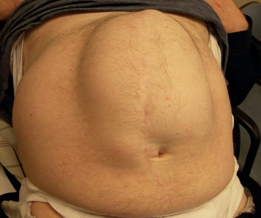
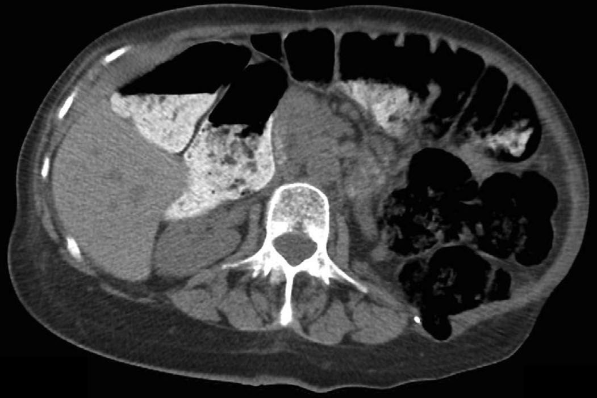
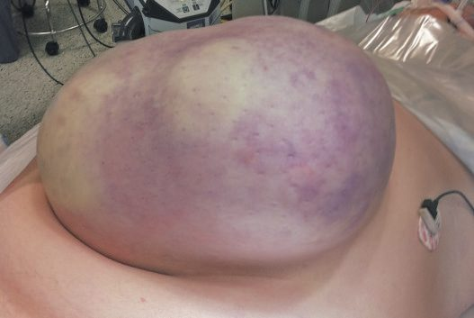
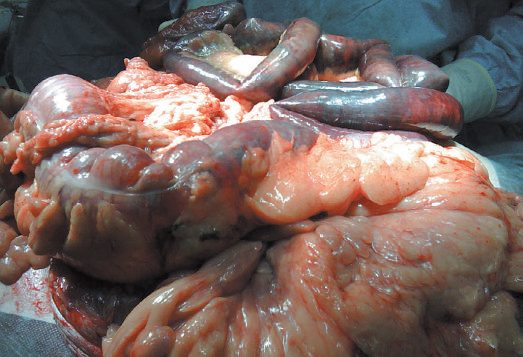

Incisional Hernia
Summary
- Incisional hernia is a defect in the musculofascial layers of the abdominal wall arising at the site of a previous surgical incision, reported in roughly 10-20% (up to 50% in some series) of laparotomy wounds and around 1-5% of laparoscopic port sites [1][2].
- It is the most common "secondary" ventral hernia and one of the most common procedures performed by general surgeons, with over 100,000 repairs performed annually in the United States alone [2].
- Recurrence after repair remains a persistent challenge, reported as high as 40% in some ventral hernia repair series even with modern mesh techniques [3].
Definition
An incisional hernia is a hernia that arises through a defect in the musculofascial layers of the abdominal wall at the site of a previous surgical scar, and may therefore occur anywhere a laparotomy or major port-site incision has been made [1].
Pathophysiology
- An incisional hernia typically begins as an early postoperative disruption of the musculofascial closure of a wound; this may progress rapidly to full-thickness wound dehiscence (classically heralded by serosanguineous discharge around the sixth postoperative day), but more often passes unnoticed if the overlying skin has healed, with a clinically apparent bulge appearing weeks, months, or even years later [1].
- Normal wound healing produces long-term collagen deposition and remodelling, but the resulting mature scar reaches only about 80% of the tensile strength of native fascia, so every laparotomy incision represents an area of relative, permanent weakness that can be exacerbated by repeated strain [3].
- Fascial strength increases rapidly between the eighth postoperative day and the second month, corresponding to the proliferative phase of wound healing and the period of active collagen synthesis, which is why at least a slowly-absorbable suture should be used for closure [3].
- Multiple, clinically unsuspected fascial defects are frequently found along the same incision at the time of repair, even when only a single hernia was apparent preoperatively [1].
- In extremely large defects (generally >10 cm), 25% or more of the abdominal viscera may reside chronically within the hernia sac ("loss of domain") producing chronic venous/lymphatic congestion and dilation of the herniated bowel, hyperlordosis of the lumbar spine from disruption of the abdominal core, and altered pulmonary mechanics from the drop in intra-abdominal pressure that follows extra-abdominal migration of the viscera [2].
Clinical features
- Most patients present with a palpable bulge underlying a previous abdominal incision, ranging from a localized swelling involving part of the scar to a diffuse bulge along its full length, or several discrete hernias along one incision [1][2].
- Discomfort varies, and cosmetic concern is common as the hernia enlarges [2].
- Episodes of intestinal obstruction are common, related to coexisting internal adhesions, but frank strangulation is comparatively rare because most incisional hernias have a shallow, wide neck; strangulation risk is highest, as with any hernia, when the fibrous defect is small relative to the sac [1].
- Chronic pressure on overlying skin from a large or long-standing hernia can lead to "paper-thin" skin or ulceration [1][2].

Etiology
- Risk factors are commonly grouped into patient factors (obesity, malnutrition, immunosuppression or steroid therapy, diabetes, smoking, chronic cough, ascites, advanced age, connective tissue/collagen disorders, cancer), wound factors (infection, poor-quality tissue, wound tension, dehiscence), and surgical/technical factors (inappropriate suture material, poor closure technique) [1][2].
- Wound infection has the strongest documented association with subsequent incisional hernia, which is why most surgeons advocate early reopening and drainage of an infected surgical wound [2].
- Inadequate fascial closure technique is considered the most common preventable cause: the traditional "1 cm bite, 1 cm apart" technique produces more tissue ischaemia than a "small bites" technique (5-8 mm bites, 5 mm apart), and recent evidence favours the smaller-bite approach with a slowly absorbable 2/0 suture and a suture-to-wound-length ratio of at least 4:1 [1][4][5].
- Drains brought out through the primary wound (rather than a separate stab incision) increase hernia risk by preventing full fascial apposition [1].
Diagnosis
- Diagnosis is usually made on physical examination, with the hernia sac palpable and, depending on morphology, an attempt made to define the fascial edges; examination should assess the entire length of the incision, as occult additional defects are common [2].
- CT is used for complex or large hernias to determine the number and size of defects, characterize the contents, assess for loss of domain, and plan the operative approach, including any need for component separation [1][6].
- CT also differentiates true incisional hernia from rectus abdominis diastasis, in which the midline aponeurosis remains intact [5].

Scoring and Severity
The European Hernia Society classification, developed by Muysoms and colleagues, is the most widely accepted system for both midline (subxiphoid, epigastric, umbilical, infraumbilical, suprapubic) and lateral (subcostal, flank, iliac, lumbar) incisional hernias, and grades hernias by location and width in centimetres [3]. "Complex" or "giant" incisional hernias, generally defined by a fascial defect exceeding 10 cm and/or loss of domain, represent the most severe end of the spectrum and require specialized abdominal wall reconstruction techniques [2].
Treatment and Management
- Asymptomatic incisional hernias, particularly in elderly, frail, or high-comorbidity patients, may not require treatment, and an abdominal binder can provide symptomatic relief and may limit further enlargement [1][6].
- For patients proceeding to elective repair, preoperative "prehabilitation" (smoking cessation, weight loss, and core-strengthening exercise) is recommended; a 7% total body weight loss produces a meaningful improvement in metabolic state, and each 5 kg of weight loss is estimated to create roughly one extra litre of intra-abdominal space in men (0.5 L in women) [1].
- Repair should always be individualized in discussion with the patient, and referral to a surgeon with a specialist interest in abdominal wall reconstruction should be considered for large or complex hernias [1].
- Prosthetic mesh is recommended for essentially all incisional hernia repairs in clean fields, since primary suture repair (even overlapping techniques such as Mayo repair or the layered da Silva closure) carries an unacceptably high recurrence rate; mesh may still be used in a clean-contaminated field (e.g., after elective bowel resection) with appropriate prophylaxis, but is generally avoided in frank contamination, where a temporary absorbable mesh or delayed repair may be preferred [1][3].
- Mesh selection depends on planned location and contamination risk: permanent synthetic mesh (polypropylene, polyester, PTFE) is standard for clean, definitive repair; biologic mesh (decellularized collagen matrix) is sometimes used in contaminated fields but is associated with higher recurrence and cost without proven superiority; and rapidly absorbable synthetic mesh (e.g., polyglactin) offers a cheap temporary option in contaminated fields where fascial closure is desired without permanent material [3].
- Sublay (retrorectus) mesh placement has been shown in meta-analysis to have significantly lower recurrence and surgical-site infection rates than onlay, inlay/bridging, or intraperitoneal underlay placement in open repair [3][5].
Surgeries
Open repair, general principles, the previous incision is reopened along its full length to expose any unsuspected defects; the sac is opened, contents reduced, adhesions divided, and redundant sac excised. Repair should cover the whole length of the previous incision, approximate the musculofascial layers with minimal tension, and use mesh to reduce recurrence risk [1].
Retromuscular sublay ("Rives-Stoppa") repair, the posterior rectus sheath is opened at the linea alba on each side, the retrorectus space developed laterally to the semilunar line (protecting the neurovascular bundles), and the posterior sheath closed; mesh is placed in this highly vascularized retrorectus plane, deep to the rectus muscle, and the anterior sheath is then closed over it. This is now the preferred open technique for medium-to-large or multiple defects, with reported recurrence rates of 7-11% in contemporary series [2][3].
Preperitoneal sublay repair, mesh is placed in the preperitoneal plane rather than the retrorectus space; this avoids incising any fascial layer and is not bound by the semilunar line, but the preperitoneal dissection can be technically difficult because the peritoneum is thin [3].
Onlay repair, after fascial closure, skin flaps are raised between the anterior rectus fascia and subcutaneous tissue to allow wide mesh overlap (at least 5 cm) placed anterior to the closed fascia; it avoids intraperitoneal dissection but requires large lipocutaneous flaps, carrying a higher rate of wound complications and mesh infection than sublay techniques [1][3].
Intraperitoneal underlay repair (open or laparoscopic, IPOM), mesh (coated with an antiadhesive barrier, or ePTFE) is placed deep to the peritoneum in direct contact with viscera; a laparoscopic approach reduces adhesions and lyses adhesions first, reduces hernia contents, and fixes a mesh with wide (>4-5 cm) overlap using transfascial sutures and/or a "double crown" of tacks. Primary closure of the defect before mesh placement does not affect recurrence but may reduce seroma formation [2][3].
Bridging/inlay repair, used when fascial edges cannot be approximated and mesh must bridge the gap directly; this carries the highest recurrence rate of any mesh position and the poorest functional result because fascial continuity is not restored, but is sometimes the only option in massive defects, reoperative surgery, or after treatment of abdominal compartment syndrome [3].
Anterior component separation (Ramirez, 1990), the external oblique aponeurosis is divided 1-2 cm lateral to the rectus sheath along the length of the defect bilaterally, releasing up to 10 cm of fascial advancement per side to allow midline closure; large lipocutaneous flaps predispose to wound complications, and active smoking and poorly controlled diabetes (HbA1c ≥7) are considered relative contraindications by most centres [2].
Posterior component separation / transversus abdominis release (TAR) (Novitsky and Rosen), extends the retrorectus (Rives-Stoppa) dissection by incising the posterior lamella of the internal oblique aponeurosis medial to the neurovascular bundles and dividing the transversus abdominis fibres, creating a large posterolateral pocket for mesh placement without the wound morbidity of anterior component separation; a hernia defect-to-rectus-width ratio greater than 0.5 favours choosing TAR over a standard Rives-Stoppa repair [2][3].
Laparoscopic incisional hernia repair (LIHR), first described by LeBlanc in 1993; associated with lower rates of surgical site infection than open repair (reported as low as 2.3% vs 9.2%) and shorter hospital stay, though evidence on recurrence and postoperative pain compared with open repair is mixed, and most laparoscopic repairs leave the defect unclosed (bridged), often producing a persistent, benign postoperative bulge that must be distinguished from true recurrence [8]. Enterotomy is the most feared complication, occurring in a similar proportion of laparoscopic and open repairs (7.9% vs 7.3% in one series); an unrecognized enterotomy carries substantially higher mortality (7.7%) than one recognized intraoperatively (1.7%) [8].
Complications
- Complications may be early (wound-related) or late (chronic pain, recurrence).
- Surgical site infection after ventral/incisional hernia repair ranges from about 4% to 21% in the literature and is itself a risk factor for later recurrence [3].
- Mesh infection occurs in roughly 1-8% of cases and, unlike standard surgical site infection (diagnosed within 90 days by CDC criteria), may not present for up to a year or more, commonly as a chronic draining sinus (68% of cases), recurrent seroma, enterocutaneous fistula, or exposed mesh [3].
- Risk factors for mesh infection include diabetes, smoking, obesity, urgent/emergency surgery, and immunosuppression; open surgery and onlay mesh position carry higher infection rates than laparoscopic surgery or sublay/underlay placement [3].
- Macroporous polypropylene mesh in an extraperitoneal position has the highest salvage rate if infected (around 72%); PTFE and composite meshes are unlikely to be salvageable and usually require explantation [3].
- Seroma occurs in a wide range (3-52%) depending on technique, with risk increased by emergency surgery, high BMI, large skin flaps, component separation, onlay mesh, and biologic mesh [3]. "Pseudo-recurrence," a postoperative bulge from mesh laxity or bridging without true herniation, must be distinguished from genuine recurrence, particularly after laparoscopic repair [1][8].


Prognosis
- Recurrence rates vary widely with technique and hernia complexity, from roughly 7-11% with modern retromuscular sublay repair to as high as 40% in some series of complex ventral hernia repair overall [2][3].
- Bridging/inlay mesh repair, used when fascia cannot be re-approximated, carries the highest recurrence of any technique [3].
- Modern sublay techniques have shifted outcomes favourably compared with historical primary suture repair and onlay mesh placement.
References
- Bailey & Love's Short Practice of Surgery, 28th ed., Ch. 64 The abdominal wall, hernia and umbilicus
- Maingot's Abdominal Operations, 13th ed., Ch. 13 Ventral and Abdominal Wall Hernias
- Sabiston Textbook of Surgery, 22nd ed., Ch. 80 Ventral Hernias
- The ABSITE Review 2022, Ch. 38 Hernias, Abdomen, and Surgical Technology
- Schwartz's Principles of Surgery: ABSITE and Board Review, Ch. 35 Abdominal Wall, Omentum, Mesentery, and Retroperitoneum
- Oxford Handbook of Clinical Surgery, 5th ed., Ch. 10 Abdominal wall
- Sabiston Textbook of Surgery, 22nd ed., Ch. 81
- Maingot's Abdominal Operations, 13th ed., Ch. 14 Perspectives on Laparoscopic Incisional Hernia Repair
- Bailey & Love's Short Practice of Surgery, 28th ed., Ch. 78